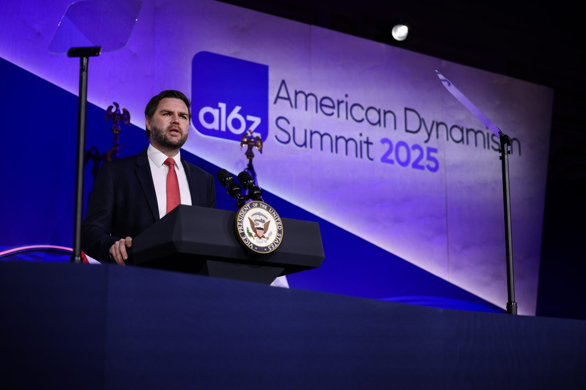
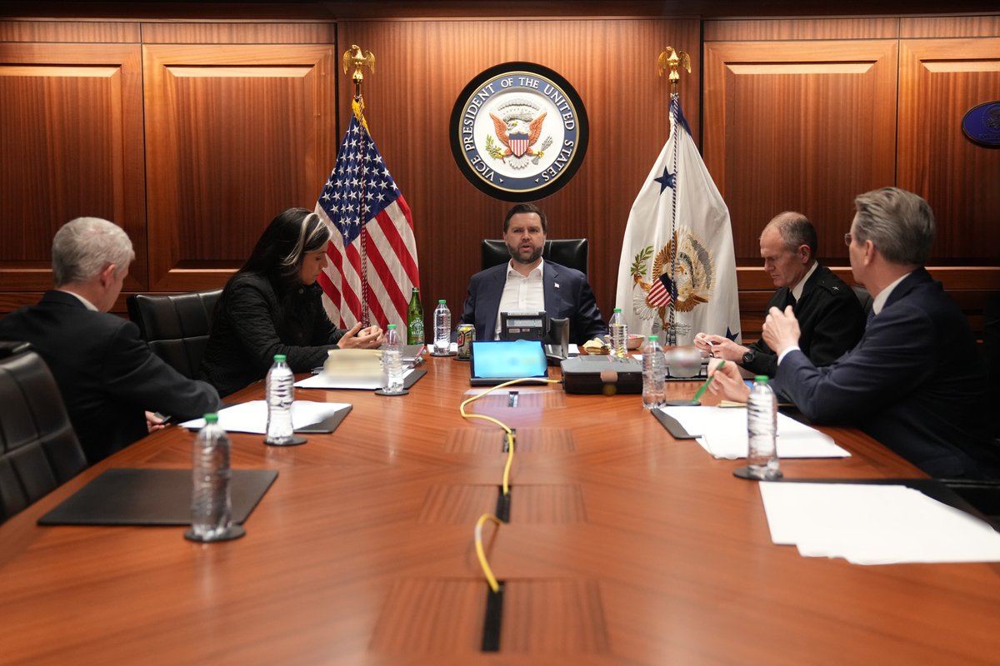
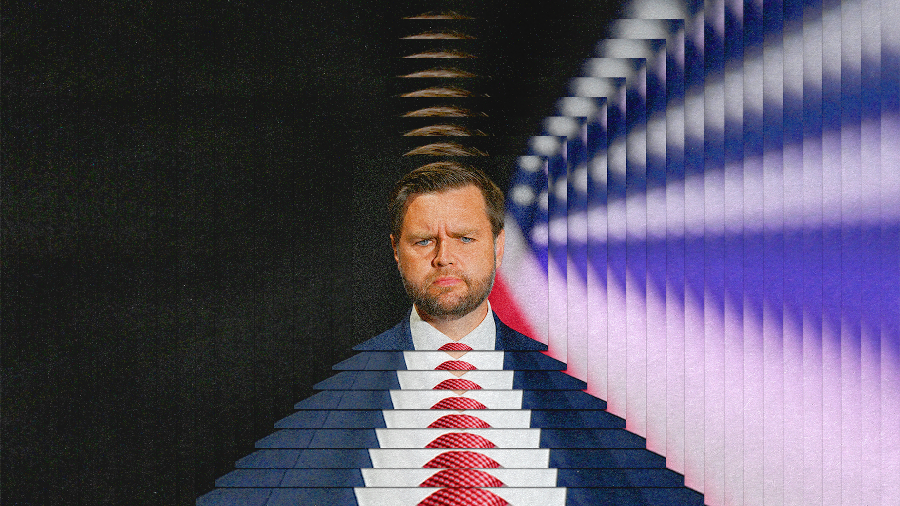
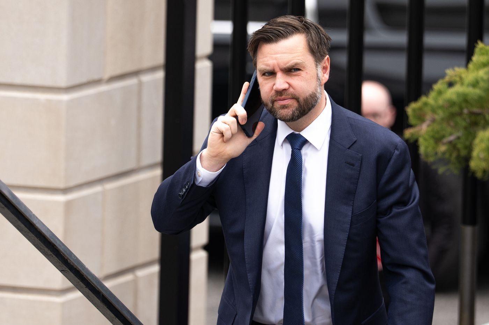
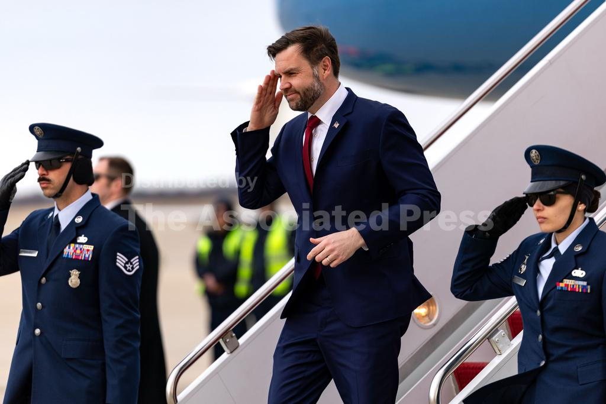
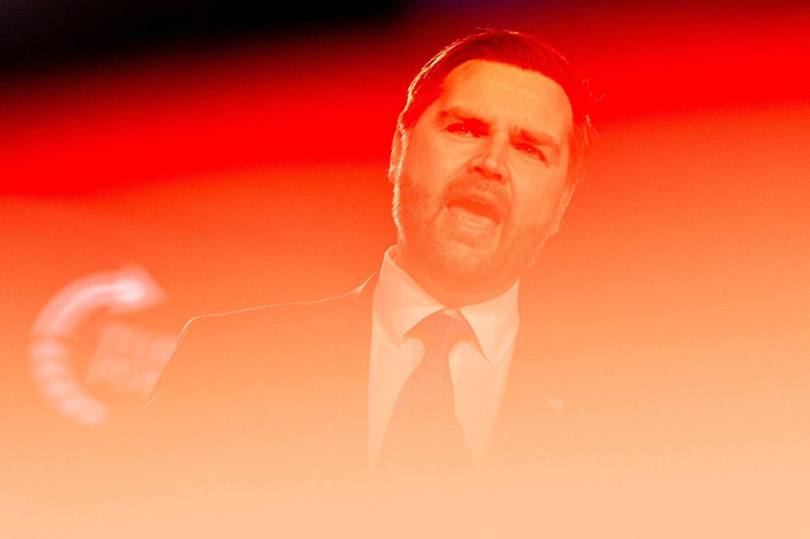
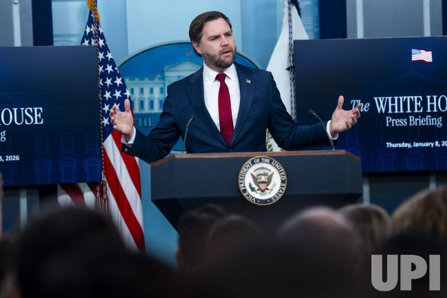

Vance 与军事相关的公开活动照片。

2026 年 2 月 28 日，代号"史诗之怒"的军事行动正式启动。一个在竞选期间反复承诺"美国不会对伊朗开战"的副总统，发现自己不在决策房间里。
2026年2月28日，代号"史诗之怒"（Operation Epic Fury）的军事行动正式启动。美以联合轰炸机群从多个基地升空，向伊朗境内的弹道导弹设施倾泻弹药。B-2隐身轰炸机的首次打击标志着这场战争进入了一个不可逆的阶段。
在这个历史性的时刻，美国总统 Donald Trump 坐镇Florida州 Mar-a-Lago 的战情室，身旁是国务卿 Marco Rubio、国防部长 Pete Hegseth 和国家安全顾问。屏幕上的卫星画面实时显示着波斯湾上空的轰炸路径。
而美国副总统 J.D. Vance，这个在竞选期间反复承诺"美国不会对伊朗开战"的人，不在那个房间里。

白宫释放的照片显示，Vance 被独自留在Washington的战情室"二楼"——通过安全视频会议接入指挥链。他的身旁是一罐 Diet Mountain Dew 和表情阴沉的国家情报总监 Tulsi Gabbard。La Voce di New York 的报道用一个简洁的句子概括了这个画面的荒诞感："当Washington向德黑兰发射炸弹时，塑造行动的小圈子中缺失了一张面孔：JD Vance。"
这个画面之所以令人震撼，不是因为它展示了 Vance 的无能——而是因为它完美地隐喻了他在整个行政当局中的地位。一个曾经在参议院听证会上雄辩滔滔、在Munich安全会议上让欧洲领导人脸色铁青的政治明星，此刻坐在战情室的角落里，手里握着一罐低卡汽水，看着别人打一场他反对的战争。
Vance 的 X 账号在那整个周末"异常安静"。没有推文，没有声明，没有任何对这场他本应参与决策的战争的个人表态。这种沉默本身就是一种修辞——它比任何辩解都更有力地暴露了他的处境。
3月2日，Marjorie Taylor Greene 在 Megyn Kelly 的节目中问出了一个整个 MAGA 基本盘都在想的问题："JD Vance 到底在哪里？"
2026年3月5日，The Atlantic 发表了 Idrees Kahloon 撰写的长文《The Humiliation of J.D. Vance》（J.D. Vance 的屈辱）。这篇文章不是一篇普通的政治评论——它是迄今对 Vance 在白宫中被系统性地边缘化进行的最精准的外科手术式解剖。
文章的核心论点只有一句话："Trump's war with Iran shows that, within the administration, the vice president's opinions matter less and less." [注1]
Kahloon 的分析沿着五条线索展开，每一条都指向同一个结论：Vance 不是一个有影响力的副总统，他是一个被展示的摆件。

Kahloon 用 Vance 自己的话来反杀 Vance。2024年竞选期间，Vance 对 Tim Dillon 说："我们的利益，我认为非常明显，是不与伊朗开战。那将是资源的巨大分散，对我国来说将是极其昂贵的。"对 Shawn Ryan 的播客，他更加直白：以色列和伊朗之间的战争是"引发第三次世界大战最可能、最危险的情况"。
2026年2月26日——战争爆发前两天——Vance 还在接受Washington邮报采访时说自己是"外国军事干预的怀疑者"，"我们都倾向外交选项"。
然后炸弹落下了。Vance 的这些承诺在硝烟中化为灰烬。
Kahloon 的文章最具杀伤力的部分不是关于伊朗——而是它展示了一个全景式的权力地图。在这张地图上，Vance 几乎在每个政策领域都被击败了。
外交政策：Vance 是 MAGA 联盟中的孤立主义一端，拥有连贯的理论体系——美国不能同时在多条战线作战，不应将稀缺弹药消耗在地区冲突上，因为还要应对崛起中的超级大国中国。但讽刺在于，他最担心的场景正在发生：导弹拦截器正以惊人速度消耗在一场中东的 discretionary war 中。在Ukraine问题上，他的盟友 Elbridge Colby 决定暂停对乌武器运输，但 Trump 在数天内就推翻了这个决定，甚至扩大了对Ukraine的支持。在伊朗问题上，他被完全绕过。
经济政策：Vance 想将儿童税收抵免扩大到每个孩子5000美元，想通过扩大工会化、拆分大科技公司、加速反垄断执法来保护美国工人。他推崇"匈牙利式"家庭政策。现实呢？The One Big Beautiful Bill Act（OBBBA）仅将儿童税收抵免提高到2200美元。Atlantic 的评价一针见血："除了关税——那本来也是 Trump 几十年的执念——几乎看不出任何 Vanceism。" [注1]
AI政策：2025年Paris AI峰会上，Vance 发表了重要演讲，反对"过度监管 AI"，承诺"保护美国 AI 和芯片技术免受窃取和滥用"。但到了2025年12月，Trump 行政当局授权向中国出口先进芯片以换取25%的收益分成。2026年3月，行政当局还试图打压 Anthropic。Vance 在Paris说过的话，在Washington没人记得。
移民政策：虽然 Vance 在竞选期间的反移民立场与 MAGA 基本盘一致，但 Atlantic 指出，在这个领域真正掌握权力的是 Stephen Miller——他的影响力远超 Vance。
文化战争：一些 Vance 最喜欢的主题在行政当局中有所体现，但 Atlantic 的判断很明确：Miller 显然拥有更大的权力。
Kahloon 获得了一份意外泄露的 Signal 聊天记录。在这份记录中，Vance 曾在私人通信中表达了对打击胡塞武装的反对意见，称其为"错误"。但这个反对意见被否决后——Atlantic 用了一个精准的词——他"acquiesced"（迅速顺从了）。[注1]
这不是一个政治家的正常行为模式。正常的行为模式是：你在内部反对，如果被否决，你可以在公开场合保持沉默，或者以某种方式表达保留意见。但 Vance 的模式是：内部反对，外部全面辩护。
这种"内部反对 - 外部全面辩护"的模式不仅出现在胡塞武装问题上，也出现在伊朗战争的整个过程中。POLITICO 3月13日的报道援引两位匿名白宫高级官员的消息，其中一位描述了 Vance 的角色："他的角色是向总统和行政当局提供……从许多不同角度可能发生的情况的所有观点……但一旦做出决定，他完全支持。" [注2] 另一位则更加直接："Vance 在 Trump 决定发动战争之前，对美国打击伊朗持怀疑态度。" [注2]
"持怀疑态度"和"完全支持"之间的切换速度之快，令人眩晕。
Atlantic 文章揭示了两个人事冲突，它们比任何政策分歧都更清晰地展示了 Vance 权力的衰减。
Gail Slater，Vance 的前政策顾问，在司法部反垄断执法负责人位置上被司法部长 Pam Bondi 逼迫下台。她的副手 Roger Alford 在去年被赶走时更加直白，称"MAGA-in-Name-Only lobbyists"正在追求"enrich themselves"。[注1]
这些人不是 Vance 的泛泛之交。Slater 是他从参议员时代就开始合作的反垄断政策核心人物。Alford 的指控直接指向了 MAGA 运动的腐败——而这个运动正是 Vance 声称要改造的对象。
Elbridge Colby，五角大楼最高政策官员，是 Vance 在国防政策领域的核心盟友。2025年夏季，Colby 成功做出了一个 Vance 一定会赞同的决定：暂停对Ukraine的武器运输。但 Trump 在数天内就推翻了这个决定。
Atlantic 用这个故事来展示 Vance 式路线在整个行政当局中的溃败——不只是他的个人影响力在消退，而是他所代表的那个思想派系正在被系统性地清除。
Atlantic 文章的结尾段值得完整引用：
"Vance came to public attention as a resounding critic of Trump who could nonetheless explain his appeal among heartland Americans to coastal elites. [...] Reinvention is obviously possible for a man who has reinvented himself before. But if he seeks the Republican nomination for president in 2028, he may find himself bound to an unpopular series of policies that the 2024 version of Vance would oppose."
（「Vance 作为一个响亮的 Trump 批评者进入公众视野，但他却能向沿海精英解释 Trump 在心脏地带美国人中的吸引力。[……] 重塑对一个曾经重塑过自己的人来说显然是可能的。但如果他寻求 2028 年共和党总统提名，他可能会发现自己被绑定在一系列 2024 年的 Vance 会反对的不受欢迎的政策上。」）
这回到了我们在第三章讨论的那个核心概念：身份的可塑性。Vance 的每一次转身都曾被视为灵活性的体现，但在白宫中，这种可塑性变成了牢笼——他已经为自己塑造了太多层身份，以至于当需要做出一个真实的选择时，他已经不知道哪一层才是真的。
如果说 Atlantic 的文章是从内部解剖了 Vance 的权力衰退，那么New York杂志 Ed Kilgore 的分析则提供了一个外部视角：通过 Vance 和 Marco Rubio 的对比，揭示了两条完全不同的政治路线。[注3]
Kilgore 引用了 Jonathan V. Last 的观察，这是理解 Vance 权力基础的关键：
"His base of power isn't Republican voters, but Republican elites. He's spent his entire adult life currying favor with more powerful patrons — progressing from Amy Chua, to David Frum, to Peter Thiel, to Tucker Carlson, and finally to Donald Trump's children."
（「他的权力基础不是共和党选民，而是共和党精英。他整个成年生涯都在讨好更有权势的庇护者——从 Amy Chua，到 David Frum，到 Peter Thiel，到 Tucker Carlson，最后是 Trump 的子女。」）
"Instead of making himself popular with voters, Vance chose to work the inside game. He targeted people with enough juice to give him the prizes he wanted."
（「Vance 没有选择让自己在选民中受欢迎，而是选择了走内部路线。他瞄准的是那些有足够影响力能给他想要的东西的人。」）
这段话解释了 Vance 在伊朗战争中的行为模式。他不是一个用民意来影响决策的副总统——他是一个用"庇护者关系"来获取权力的副总统。当庇护者之间的利益发生冲突时，他没有民意可以依靠。
而 Rubio 走的是完全不同的路。从2016年被 Trump 辱骂为"Lil' Marco"，到2026年成为国务卿兼国家安全顾问，Rubio 始终在共和党建制内运作。他拥有 Vance 缺乏的东西：一个独立于 Trump 的选民基础（Florida的古巴裔社区、保守派福音派、国防鹰派），以及在国会山长期积累的人脉关系。
这两个人的对比，在三个关键时刻被推向了极致。

2026年初的委内瑞拉行动中，Rubio 是主导者。作为国务卿，他在整个行动的策划和执行中扮演核心角色——从情报收集到外交协调到军事部署。Vance 的角色是什么？是事后的"辩护者"。他将这场军事行动包装为"执法行动"，一个听起来不那么像战争的说辞。
鹰派设计战争，鸽派为战争辩护——这个角色分配本身就是一种屈辱。它不是 Vance 选择了这个角色，而是这是他被允许扮演的唯一角色。
在伊朗战争中，这种对比更加尖锐。Rubio 在 Mar-a-Lago 的战情室里，站在 Trump 身旁，监控着每一波轰炸。Vance 在Washington的二楼，手里握着 Diet Mountain Dew，通过视频会议旁听。
战争爆发后，Rubio 作为国务卿在全球范围内获得了巨大的媒体曝光——联合国演讲、国会听证、电视专访。Vance 呢？他被指派领导"反欺诈战争"（War on Fraud）——一个听起来像行政任务而非国家战略的角色。
"不需要 Vance 向 MAGA 基本盘推销战争——他们已经因 Trump 的声明而 gung-ho。不需要 VP 欢呼——Trump 的所有媒体出口都在高强度鼓吹战争。"
Vance 的主要角色被定义为"在社交媒体上保护 Trump 的 MAGA 侧翼"。但连这个角色都变得多余了——因为 Trump 本身就是 MAGA 侧翼的最大保护者。
第五章我们讨论了Munich安全会议——Vance 2025年的演讲震动欧洲，一年后 Rubio 接棒出席，而 Vance 的肖像在会场被植物巧妙地遮挡。这不是巧合，这是一个象征性的权力交接。演讲者是 Vance，执行者是 Rubio。
伊朗战争暴露的不只是 Vance 的问题——它暴露了整个 MAGA "美国优先" 意识形态的内在矛盾。
Trump 在2016年以反战候选人身份上台，在2024年以反战承诺连任。竞选期间的口号——"不再有战争，结束这些愚蠢、毫无意义的战争"——曾是 MAGA 运动最核心的承诺之一。而当炸弹落下时，这个承诺碎裂的声音在 MAGA 阵营内部产生了回响。
Joe Rogan 在3月10日的播客中说："人们感到被背叛"，竞选承诺是"不再有战争，结束这些愚蠢、毫无意义的战争"。Rogan 不是随便什么人——他是2024年大选期间 Vance 最关键的媒体盟友之一，他的播客是 Vance 接触独立选民和年轻选民的主要渠道。当 Rogan 说"背叛"这个词时，它对 Vance 的伤害远超过任何主流媒体的批评。[注4]
Tucker Carlson，Vance 最亲密的意识形态盟友之一，在 ABC News 采访中称战争是"邪恶的"。David Sacks，Vance 的亲密盟友、白宫 AI 沙皇，说美国应该"宣布胜利并离开"伊朗。[注4]
这些声音构成了一个令人不安的合唱团：Vance 最重要的意识形态盟友几乎全部站在了战争的对立面。
而那些站在战争一方的人呢？
Laura Loomer，右翼影响者，在社交媒体上呼吁 Vance 谴责 Tucker Carlson，否则"Marco 将成为提名人"。这个威胁直指 Vance 的政治命门：如果你不与 Trump 的战争站在一起，donors 就会去找 Rubio。[注4]
Joe Kent，国家反恐中心主任，因抗议伊朗战争于3月11日辞职。Kent 不是普通官员——他是 MAGA 运动的忠实信徒，曾在2022年挑战Washington州众议员 Jaime Herrera Beutler（她因投票弹劾 Trump 而受到关注）。当一个 MAGA 核心官员因反战辞职时，这场战争在 MAGA 阵营内部引发的裂痕已经无法掩饰。[注4]
数字讲述了故事。
41%的选民支持美国对伊朗的战争——这是自二战以来美国主要军事干预中获得的支持率最低的一次。[注5] 77%的共和党人支持打击伊朗，这个数字看起来令人放心，但它的反面是：23%的共和党人——近四分之一的选民——不支持。在 MAGA 的铁票仓里，这23%不是可以忽略的误差，而是可能决定初选的选票。
200名美军士兵受伤，至少13名美军死亡。[注5] 每一个数字后面都是一个家庭，而每一个家庭都可能成为MAGA反战叙事的载体。
社交媒体数据为这个叙事提供了底层的量化证据。在我们分析的全部219条社交媒体讨论中，伊朗战争议题是 Vance 在社交媒体上最脆弱的领域——无论在 Twitter 还是 Reddit 上，反对声都是最强的。[注6]
Twitter 上获得最多互动的伊朗战争相关推文来自 @allenAnalysis（44,035 likes），内容是 Vance 被问及"战争前给 Trump 什么建议"时回答的视频："I don't want to go to prison."[注7]
这句话之所以成为病毒式传播素材，不是因为它特别出格——而是因为它用最简洁的语言概括了 Vance 的困境。一个反战者被问到为什么支持战争，他的回答不是关于国家利益、不是关于地缘战略、不是关于民主对抗暴政——而是关于他自己。关于他个人可能面临的后果。这把一个应该宏大的外交政策问题，缩小成了一个个人的生存问题。
Jackson Hinkle 的推文（7,990 likes）用了一个更简单的框架："Iraq war 2.0"。[注8] 这个类比的力量在于它的即时性——不需要任何解释，任何对2003年伊拉克战争有记忆的人都会在瞬间理解它的含义：情报可能是假的，战争可能是错误的，后果可能是灾难性的。
Reddit 上的数据更加令人不安。r/MurderedByWords 上关于 Vance 的帖子获得了 49,464 分（这个 subreddit 上的最高分），标题是"He learned it from his boss too!"——指的是 Vance 的虚伪，曾经反战，现在支持战争，效仿 Trump 的行为模式。[注6]
r/NewsSource 上一个关于"Vance 的市政厅会议因不受欢迎的伊朗战争被无限期推迟"的帖子获得了 3,324 分和76条评论。[注6] 这条新闻在主流媒体中几乎没有被注意到——但它揭示了战争对 Vance 的日常政治活动的具体影响。他连公开活动都难以举行了。
r/BoomersBeingFools 上的帖子（1,457分）直接将 Vance 的引语并列放置：一边是"我们不想与伊朗开战"的竞选承诺，一边是"但我们想要和平，前提是他们没有核武计划"的战争辩护。[注6] 这种"前后对比"的手法在社交媒体上极其有效，因为它让虚伪变得可视化。
跨议题的数据对比揭示了一个重要模式：在Munich演讲议题上，Twitter 上支持与反对的比例是12:3；在2028前景上，比例是9:2；但在伊朗战争议题上，比例是1:8。[注6] 这意味着即使在 MAGA 主导的 Twitter 生态中，伊朗战争引发的反对声也是压倒性的。
即使那些"支持" Vance 的推文，也多为"防卫性"支持——不是主动赞美他的立场，而是反驳记者的提问。这暗示了一个更深层的问题：Vance 的支持者在这场战争中找不到一个值得赞美的理由，他们能做的只是阻止批评。

3月9日，Trump 在新闻发布会上做了一件在历史上极为罕见的事情：他公开承认自己的副总统与自己意见不一致。
Trump 说 Vance 对战争"philosophically a little bit different"，"不那么热情"。[注9]
这句话表面上是温和的——"philosophically different"听起来像是在尊重不同意见。但它的实际效果是毁灭性的。当美国总统公开说他的副总统在一场正在进行的战争中与他"philosophically different"时，他实际上是在告诉全世界：这个副总统不在决策圈子里。
历史上，总统公开承认与副总统意见分歧是极其罕见的。总统和副总统的分歧通常在闭门会议中解决——因为公开暴露这种分歧会削弱行政当局的团结，也会削弱副总统在国际外交中的可信度。Trump 选择公开暴露这个分歧，要么是他真的不在乎 Vance 的面子，要么是他有意在传递一个信号。
Vance 的反应揭示了更深层的困境。3月13日，他对媒体说："我认为美国总统能够与他的团队进行对话，而他的团队不会跑到美国媒体面前说三道四，这很重要。"[注2] 这句话听起来像是在批评泄密的官员，但它的潜台词更值得玩味——他在要求的是一个他不曾拥有的东西：被认真对待。
3月16日，Vance 公开支持 Trump 的伊朗战争决定，称媒体试图在他们之间制造裂痕。3月18日，他在Michigan州发表罕见直接评论，称 Trump 不会陷入长期冲突。[注10] 从"异常安静"到"公开辩护"，这个转变只用了不到两周。但转变的速度本身就是问题——它再次印证了 Atlantic 文章中"acquiesced"的判断。
Washington邮报在2026年1月——战争爆发前一个月——还发表了一篇评论文章，称 Vance 是"该职位最有权力的占据者"，说他"超越了副总统 Dick Cheney 在 George W. Bush 任期内的整体影响力"。[注11]
一个月后，这个"最有权力的副总统"被排除在战争决策圈之外，坐在战情室的二楼，喝着 Diet Mountain Dew。
这种权力的急剧衰退不是偶然的——它有一个清晰的结构。

Colgate 大学的 Sam Rosenfeld 提供了一个更深层的诊断：Vance 的身份是"MAGA 的知识分子"，有真正的信念，被绑定在 Trump 身边是有风险的。[注5] "知识分子"这个词在 MAGA 运动中本身就是矛盾的——MAGA 的核心修辞是反知识分子、反精英、反建制。当一个"知识分子"被绑定在一个反知识分子的运动上，他的信念和忠诚之间的张力就是不可避免的。
LindellTV 的 Brandon Weichert 用一个生动的比喻概括了 Vance 的处境："本应是 MAGA 运动不干预主义派的先驱，但他有点……被边缘化了"，说他在"kid's table"（儿童桌）——感恩节晚餐上小孩子坐的那张桌子。[注5]
Vance 的困境可以简化为一个二元选择：支持 Trump 的战争决策 -> 失去反战 MAGA 基本盘；反对 -> 得罪 Trump，失去通往2028提名的门票。
但这不是一个真正的二元选择——因为两个选项都通向同一个终点。
如果他选择支持战争——正如他已经做的——他会失去 MAGA 阵营中那些真正相信"美国优先"和反干预主义的人。这些人不会转向民主党，但他们可能在2028年初选中待在家里，或者转向 Rubio（他在战争中的鹰派立场反而更一致）。
如果他选择反对战争——正如他在内部曾经做的——他会得罪 Trump，而 Trump 是共和党提名过程中唯一的仲裁者。没有 Trump 的背书，Vance 在2028年的初选中几乎没有任何胜算。
这就是"习得性无助"在政治层面的终极体现。Vance 曾经相信自己可以通过思想来影响决策——他的反干预主义理论，他的"后自由主义"保守主义，他的"美国利益"外交政策框架。但当真正的考验来临时，他发现自己在决策桌上没有座位。
这与Munich演讲的矛盾是同一条线索的延续。在Munich，Vance 说"威胁来自内部"——美国不应该干预外部事务。这句话的前提是他相信自己在行政当局内部有能力塑造政策方向。但Munich之后发生的一切——Paris AI峰会与硅谷议程的合流、Rubio 接棒Munich、Vance 肖像被植物遮挡——已经暗示了他的影响力正在消退。伊朗战争只是最终确认了这个趋势。
"任何 Trump 副总统都离被抛弃只有一步之遥。" Mike Pence 忠心耿耿直到被要求违法，然后被边缘化。Vance 忠心耿耿直到被要求为一场他反对的战争辩护——然后呢？
White House 发言人 Anna Kelly 的否认声明只让事情变得更糟："试图在 Trump 总统和 Vance 副总统之间制造裂痕的努力完全是误导性的。总统倾听来自他才华横溢的国家安全团队的各种意见……" [注2] 如果总统真的"倾听各种意见"，为什么 Vance 被排除在 Mar-a-Lago 的核心决策圈之外？如果 Vance 是总统的"巨大资产"，为什么他会在战情室的"二楼"而不是主桌？
Vance 发言人 Taylor Van Kirk 的回应则更加暴露了问题："副总统一直是左右两边不断泄密的对象，人们试图将自己的观点投射到他身上……副总统是总统国家安全团队的自豪成员，他对总统的建言保持私密。"[注2] "建言保持私密"——但 Atlantic 的 Signal 聊天泄露已经证明，Vance 的"私密建言"在被否决后"迅速顺从"。私密建言的价值不在于它的存在，而在于它是否影响了决策。
当 Vance 无法影响战争时，他能做什么？
答案是筹款。2026年3月12日，就在 NY Magazine 发表他那篇尖锐分析的同一天，Axios 报道 Vance 将在 Joe Lonsdale 的 Austin 宅邸出席筹款晚宴。入场费50,000美元一人，100,000美元一对。参与者包括 JPMorgan Chase、Gemini、Crypto.com 等金融和加密货币领域的大金主。[注12]


Common Dreams 的批评直指核心："JD Vance has a lot of nerve showing up in Texas to shake down wealthy donors... while Texans are paying through the nose at the pump."[注12]
这个场景是对 Vance 当前处境的终极讽刺。他的选民因为油价飙升而痛苦——油价飙升的直接原因是他反对的那场战争——而他在Texas州的亿万富翁家中以五万美元一位的价格出售晚餐入场券。
这不是一个反干预主义者的行为。这是一个2028总统候选人的行为。而这两个身份之间的张力，正是 Vance 伊朗困境的本质。
Atlantic 文章结尾的警告正在变得越来越具体：Vance 如果寻求2028年共和党提名，"他可能会发现自己被绑定在一系列2024年的 Vance 会反对的不受欢迎的政策上。"[注1]
伊朗战争让这个问题变得不再是假设。
如果战争在短期内结束，Vance 可以勉强过关——他可以说自己的"怀疑态度"被证明是对的（战争确实不必要），同时他的"忠诚"也得到了验证（他公开支持了总统）。但这种叙事需要两个条件同时成立：战争很快结束，且 Trump 允许他这样叙事。
如果战争变成泥潭——如果美军伤亡继续上升，如果油价持续高企，如果伊朗的抵抗比预期更顽强——那么 Vance 的处境将急剧恶化。他会被同时指责：被他曾经的基本盘指责为"叛徒"（你承诺过不参战），被建制派指责为"不忠诚"（你在内部反对战争）。Curt Mills 的判断——"对于相信重建党和运动承诺的核心 MAGA 来说，这只是巨大的失望"——会变成一种政治力量。[注5]
而在这一切的不远处，Marco Rubio 正在以鹰派身份崛起。预测市场中 Rubio 已在大选概率上反超 Vance。donors 中兴起了"Draft Rubio"运动。[注3] Trump 本人也在公开和私下问他的顾问们是更喜欢 Vance 还是 Rubio。
从"Lil' Marco"到可能的2028年共和党提名人——Rubio 走过了一条 Vance 没走过的路。他在建制内积累权力，他在选民中建立独立基础，他在战争中站在总统身旁而非战情室的二楼。
Vance 的2028之路，现在要经过一片他自己承诺过不会存在的战场。
下一章——终章。当所有面孔都褪去，当七重身份在战火中燃烧殆尽，剩下的那个人是谁？通往2028的路上，Vance 发现自己站在一片他亲手承诺不会存在的战场中央。